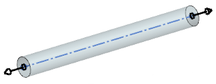
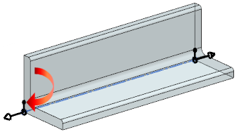

您创建型材时，将在它的起点和终点处放置端口。该端口用于指定型材的原点、对齐以及与其它管线布置对象的相对方位。
在圆柱形型材，比如管道和软管中，每个端口由下列对象组成：
端口原点处的小圆，用于定位型材。
一个较大的矢量符号，用于表示对齐矢量的法向。

对于非圆形型材，比如槽形铝材或者角钢，将会在端口处添加旋转矢量，用于绕原点对型材轮廓进行定向。

端口显示受管线布置首选项对话框中的显示选项卡控制。